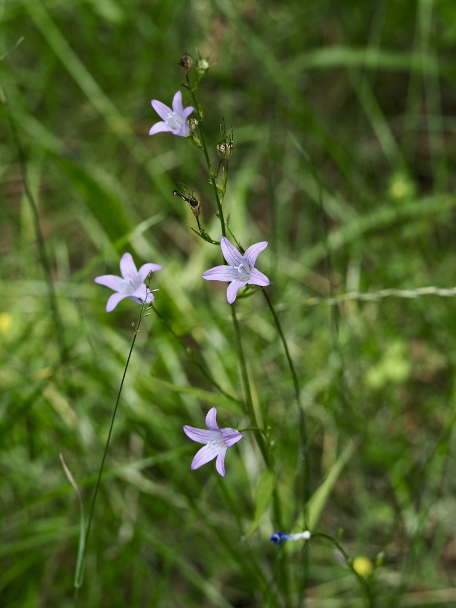

Schlanke Glocken am sonnigen Wegrand – einst Gemüsepflanze, heute Wildkraut.


Die vergessene Gemüsepflanze
Bis ins 19. Jahrhundert war die Rapunzel-Glockenblume in vielen Bauerngärten zu finden – als zweijähriges Wurzelgemüse. Die fleischige Pfahlwurzel schmeckt mild-nussig, fast wie Schwarzwurzel, und auch die jungen Blätter wurden im Frühling als Salat gegessen. Mit der Industrialisierung verschwand sie aus der Küche – aber der Name „Rapunzel" im Grimm-Märchen erinnert bis heute an sie.
Filigrane Glocken in lockerer Rispe
Anders als ihre robusteren Verwandten bildet C. rapunculus zarte, kleine Blütenglocken in lockerer Rispenform. Die Blüten sind hellblau bis fahlviolett, etwa zwei Zentimeter lang, und öffnen sich nacheinander von unten nach oben – ein Trick der Natur, der den Blühzeitraum verlängert und Insekten über Wochen verlässliche Nahrung bietet.
Wissenswertes & Merksätze
Erkennungszeichen
Schmale Rispe mit hellen, kleineren Glocken (1,5–2 cm). Stängel gerade aufrecht, kaum verzweigt. Untere Blätter länglich-lanzettlich, am Rand leicht gewellt. Beim Anschneiden tritt weißer Milchsaft aus.
Hinweis auf Magerstandort
Die Rapunzel-Glockenblume bevorzugt nährstoffarme, sonnige Böden. Wo sie noch wächst, ist die Wiese meist seit Langem nicht überdüngt – ein Indikator für naturnahe Pflege.